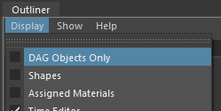
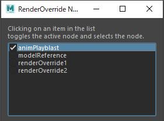
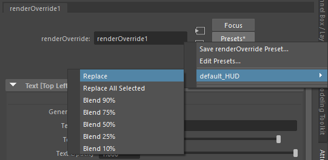

Render Override Node¶
Contents of this page:
Overview¶
When RenderOverride is activated, basic information (text) is displayed, but for more detailed control, create a RenderOverride node and set various attributes

Create RenderOverride node¶
Method1
From Shelf, click on the NodeEditor icon to launch the editor

Click the
Create RenderOverride Nodebutton to create a node
Method2
Run the following MEL command
createNode "renderOverride";
How to verify that a node has been created¶
Confirm that a RenderOverride node (DG node) has been created
Outliner
In Outliner, uncheck
Display > DAG Objects Onlyin the menu
NodeEditor
The created node will appear in the list of nodes in NodeEditor.¶
Important
Multiple RenderOverride nodes can be created in a Maya® scene, but only one node (“active node”) is applied to the view.
The node applied to the view is determined as follows
Check the RenderOverride node, in order of name, to see if the
Enableattribute is checked.The information for the node whose
Enableattribute was checked first is applied.If none of the nodes have
Enablechecked, the default text will be displayed.
With NodeEditor, you can limit the number of active nodes to one, since the
Enableattribute will be off for all but the selected node.Multiple nodes can be used for different purposes, such as ” for layout ” and ” for Playblast “.
Presets¶

After creating a node, you can use the Presets button in the Attribute Editor to fill in the defined HUD strings, etc.
Attributes of the RenderOverride node¶
Enable¶

If checked on, various settings are reflected in the view
If the check is off, it is disabled
If there are multiple RenderOverride nodes in the scene, the first node whose
Enableis on will be used, in order of name.
Other Attributes¶
Other attributes can be found on a dedicated page (link below).